재주문 규칙이 견적 요청을 만들고, 구매 주문과 입고로 재고가 늘어납니다. 청구서를 게시하고 입금을 등록한 뒤 회계를 켜면, 지난 문서로 전표가 다시 만들어지고 시산표의 차변과 대변이 맞습니다.
무엇을 · 왜#
이 세 모듈도 앞 장처럼 이벤트로만 이어집니다. 나중에 켤 때 과거를 어떻게 다루는지가 모듈마다 다릅니다.
| 모듈 | 과거 이벤트로 다시 만드는 것 | 다시 만들 수 없는 것 | 켤 때 묻는 것 |
|---|---|---|---|
| 구매 | 없음 | 켜기 전의 납기 | 없음 |
| 청구 | 청구 대상 수량 | 켜기 전의 입금 기록 | 이 날짜 이후의 주문을 청구 대상으로 볼지 |
| 회계 | 켠 뒤의 일과 그 전의 게시 청구서·입금 전표 | 청구 모듈이 없던 기간의 전표 | 장부를 시작할 날짜 |
먼저 알아 둘 것
- 가온가전은 가상 회사이고, 수치는 모두 가상 회사의 것입니다. 화면은 로컬 Supabase에서 찍었습니다.
- 이 장의 손익은 교육용 숫자입니다. 기초 재고를 장부 시작일에 재고 조정으로 넣었기 때문에, 그 금액 5,200,000 원이 재고자산감모손실의 대변으로 잡혀 비용이 마이너스로 보입니다. 실제 회사라면 모듈을 켤 때 화면에 나오는 안내대로 기초 잔액 전표로 넣습니다. 입력하는 화면은 회계 → 기초 잔액 입력입니다. 이 튜토리얼에서는 그 화면을 따라 하지 않습니다.
- 시산표의 미착품 -15,700,000은 입고한 물건의 공급사 청구서를 아직 처리하지 않아 남은 금액입니다.
이 장에서 다루지 않는 메뉴
메뉴에는 이 장에서 쓰지 않는 화면도 있습니다. 재고의 재고 개요·보충·재고 실사·이동 내역·폐기 현황, 구매의 구매 현황·구매 분석, 청구의 은행 대사·자동 대사·세금 신고·번호 점검·분개장·결제 수단·은행 명세서·은행 거래, 회계의 계정 그룹·계정 그룹 잔액·기초 잔액 입력, 설정의 표 파일 가져오기·마감 잠금·문서 양식입니다. 은행 명세서는 입력하거나 CSV 파일로 가져오며, 외부 은행에는 연결하지 않습니다.
따라 하기#
앞 장을 마친 회사에서 시작합니다. 구성원 최구매(구매, 재고)와 정회계(회계, 영업)를 추가해 둡니다.
- 구매 켜기. 관리자로 설정 → 모듈에서 구매의 켜기를 누릅니다. 실측 납기, 납기·공급사 변경, 발주 필요 예측이 열리고, 켜기 전의 납기는 다시 만들 수 없다고 알려 줍니다.
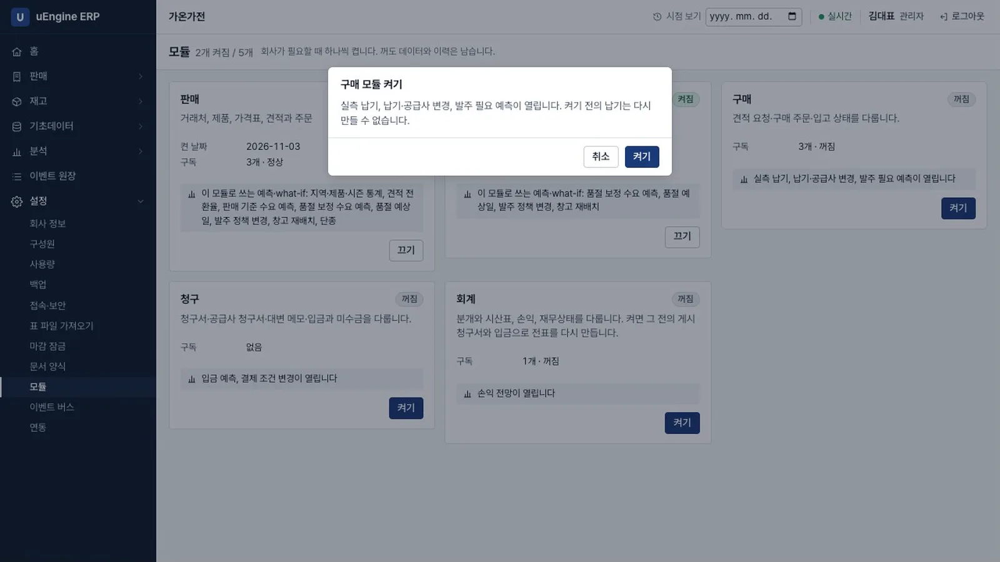
구매 켜기 - 공급사 넣기. 연락처에 회사
바람부품을 만듭니다. 제품에서 에어서큘레이터를 열고 공급사 가격에 줄을 추가해 공급사바람부품, 단가50000, 납기 일수10을 넣고 저장합니다.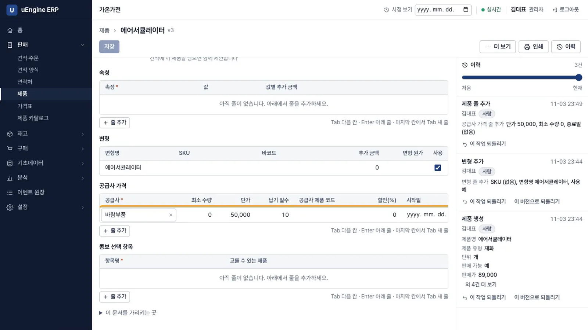
공급사 가격 - 재주문 규칙 만들기. 최구매로 로그인해 재고 → 재주문 규칙 → 새로 만들기에서 변형
에어서큘레이터, 위치재고, 최소200, 최대400, 실행자동, 공급사바람부품을 넣고 저장합니다.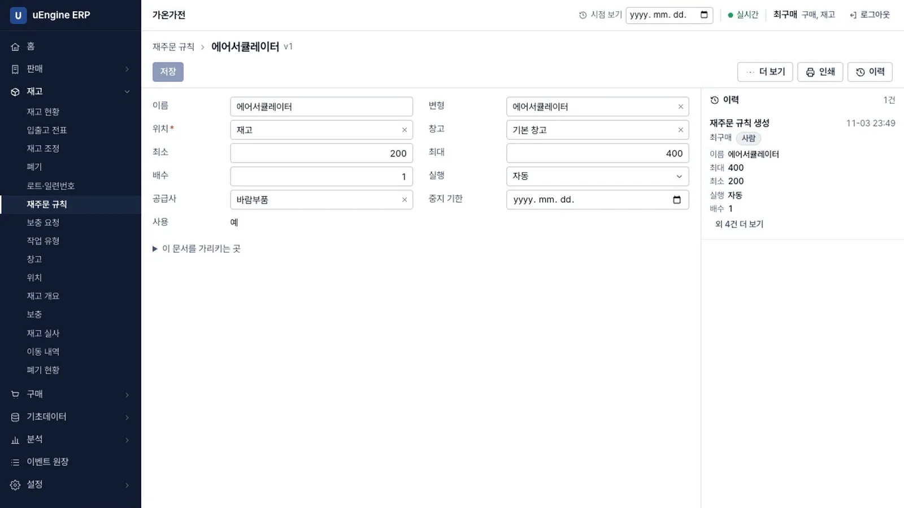
재주문 규칙 - 견적 요청 확인. 주문이 한 건 더 확정되면(녹화에서는 화면 밖에서 박영업의 명령으로 넣었습니다) 재고 모듈은 재고 수량이 최소값 아래로 내려간 것을 확인해 이벤트를 남기고, 구매 모듈이 견적 요청 초안을 만듭니다. 구매 → 구매 주문에
P00001이 수량 314, 단가 50,000으로 나타납니다.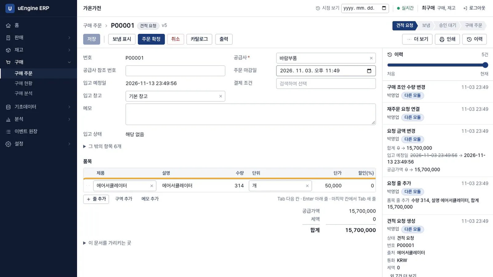
견적 요청 - 구매 주문 확정. 주문 확정을 누르면 단계가 구매 주문으로 옮겨 갑니다. 입고 전표는 재고 모듈이 이벤트를 받아 만듭니다.
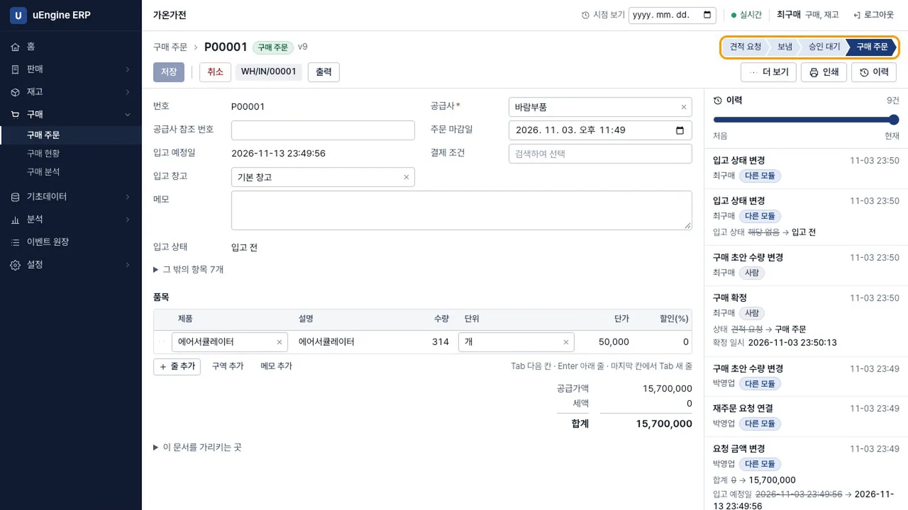
구매 주문 - 입고 완료. 입출고 전표에서
WH/IN/00001을 열고 처리 완료를 누릅니다. 재고가 95에서 409로 늘어납니다.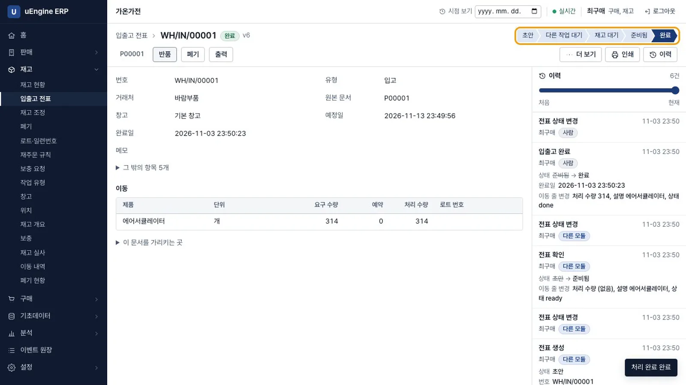
입고 완료 - 입고 상태 확인. 전표 위쪽의
P00001을 누르면 구매 주문의 입고 상태가 입고 완료입니다.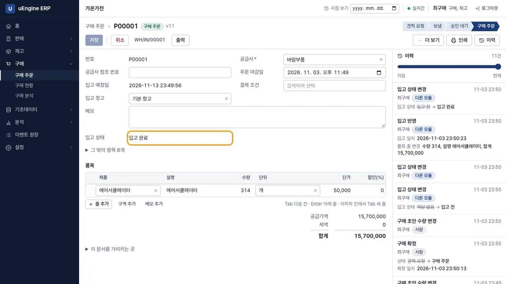
입고 상태 - 실측 납기 확인. 분석 → 예측·what-if의 실측 납기는 근거 부족,
입고 10건 필요 (지금 1건)입니다. 입고 기록이 쌓이면 사용할 수 있습니다. 발주 필요 예측은 입고 30건이 필요합니다.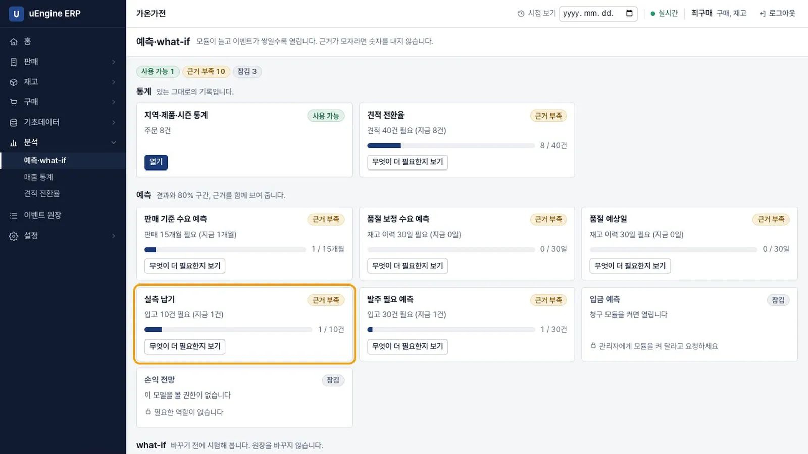
실측 납기 - 청구 켜기. 관리자로 청구의 켜기를 누르고 이 날짜 이후의 주문을 청구 대상으로 봅니다에 오늘을 넣습니다. 켜기 전의 입금 기록은 다시 만들 수 없다고 알려 줍니다.
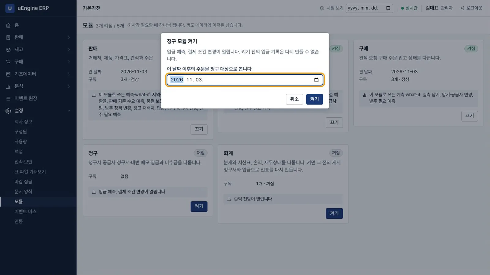
청구 켜기 - 청구서 만들기. 정회계로 로그인해 청구 → 청구 대상을 엽니다. 청구할 금액이 남은 주문이 보입니다. 납품한
S00002(489,500)의 청구서 만들기를 누릅니다.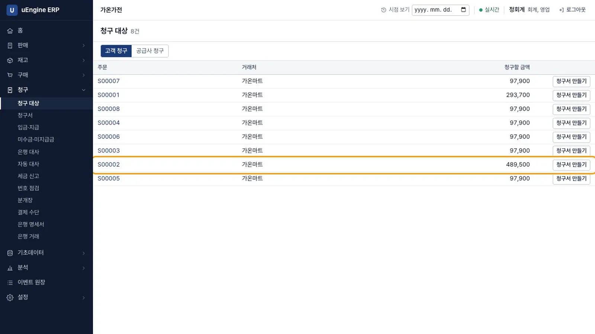
청구 대상 - 게시. 게시를 누르면 번호
INV/2026/00001이 붙고 결제 상태는 미결제입니다. 게시한 청구서는 고칠 수 없습니다.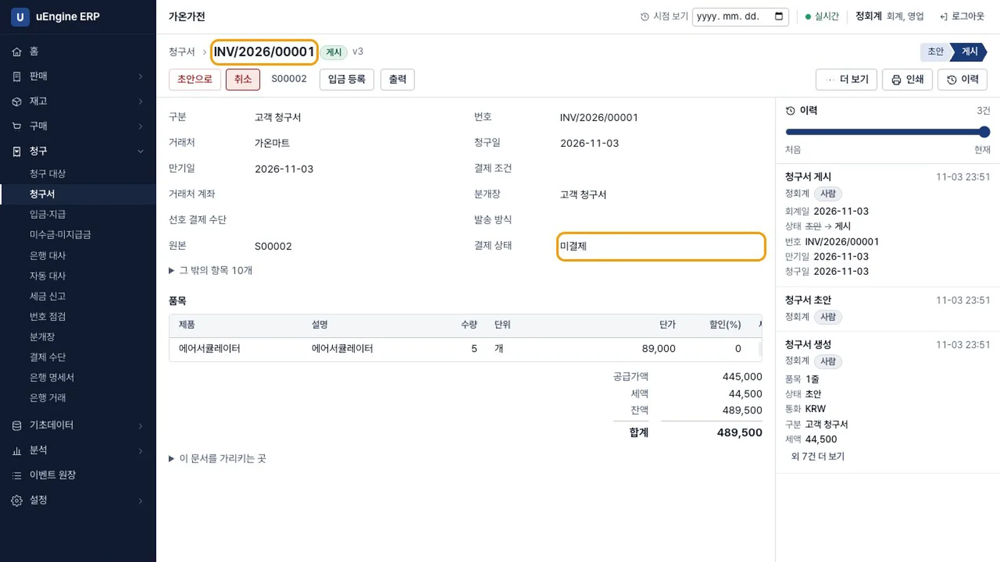
게시 - 입금 등록. 입금 등록을 누르면 금액란에 남은 금액이 채워져 있습니다. 확인하면 상태가 결제 완료로 바뀝니다.
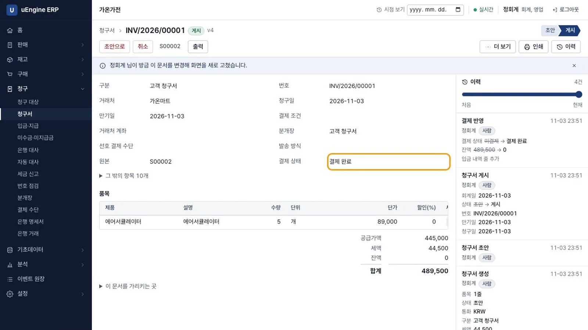
결제 완료 - 회계 켜기. 관리자로 회계의 켜기를 누릅니다. 청구 모듈이 없던 기간에는 매출 전표를 만들 수 없다고 알려 줍니다. 이 날짜부터 장부를 만듭니다에 청구를 켠 날을 넣습니다.
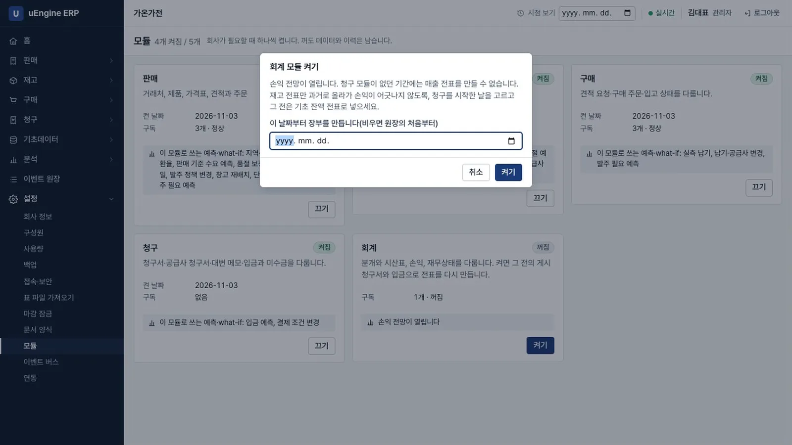
회계 켜기 - 전표 확인. 정회계로 로그인해 회계 → 전표를 엽니다. 켜기 전에 게시한 청구서와 입금, 재고 전표로 자동 전표 5건이 만들어졌습니다. 자동 전표는 고칠 수 없고 원본 문서에서 정정합니다.
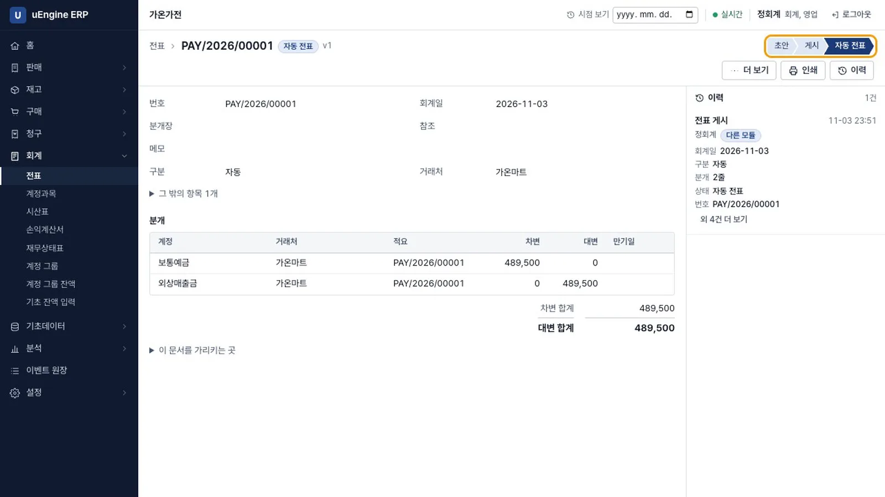
전표 - 시산표 확인. 시산표에는 차변과 대변 합계가 모두 22,139,000으로 나오고
차변과 대변이 맞습니다.라고 표시됩니다.
시산표 - 손익 확인. 손익계산서는 수익 445,000, 비용 합계 -4,940,000, 순이익 5,385,000입니다. 비용이 마이너스인 이유는 위의 안내에 나와 있습니다.
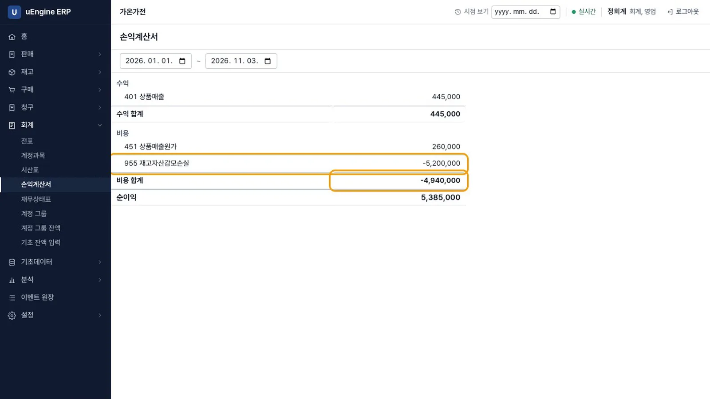
손익계산서
확인 문제#
회계를 나중에 켜도 지난 청구서의 전표가 생기는 이유는 무엇인가요?
게시한 청구서와 입금은 이벤트로 원장에 남아 있습니다. 회계 구독이 선택한 날짜부터 그 이벤트를 다시 읽어 전표를 만듭니다. 처음부터 회계를 켠 회사와 같은 이벤트를 준 회사의 시산표가 같은지는 저장소의 시험으로 확인합니다.
청구 모듈이 없던 기간의 매출은 어떻게 하나요?
그 기간의 매출 전표는 만들 수 없습니다. 재고 전표만 과거까지 소급해 손익이 어긋나지 않도록, 청구를 시작한 날을 장부 시작일로 고르고 그 이전 금액은 기초 잔액 전표로 입력합니다.
게시한 청구서를 잘못 만들었으면 어떻게 하나요?
되돌리지 않습니다. 세금 신고된 문서를 시스템만 되돌리면 안 되므로 대변 메모로 정정합니다. 다음 장에서 되돌리기가 차단되는 상황을 확인합니다.